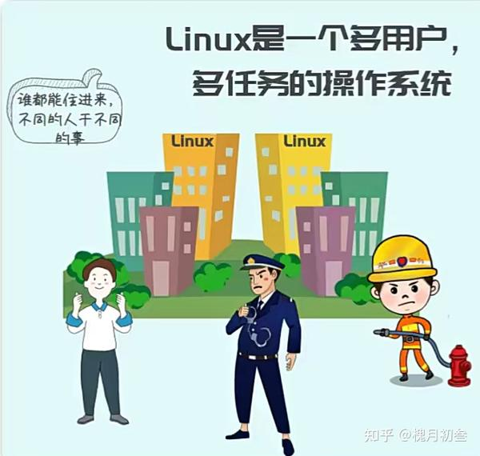
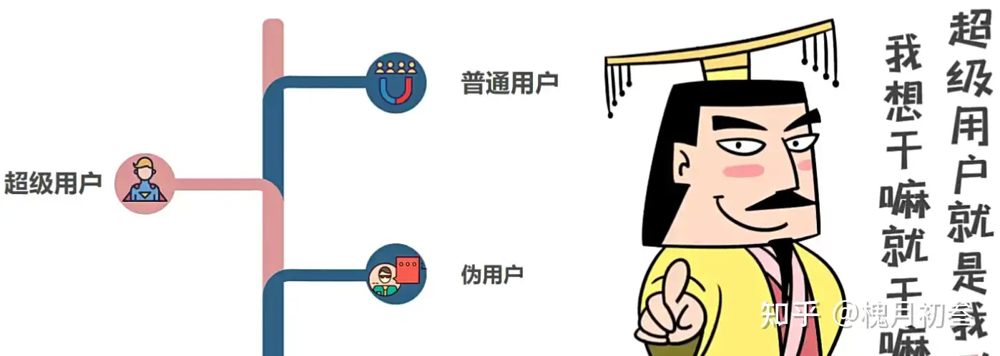
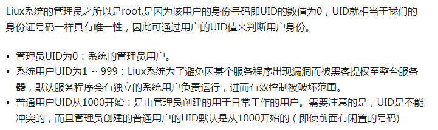
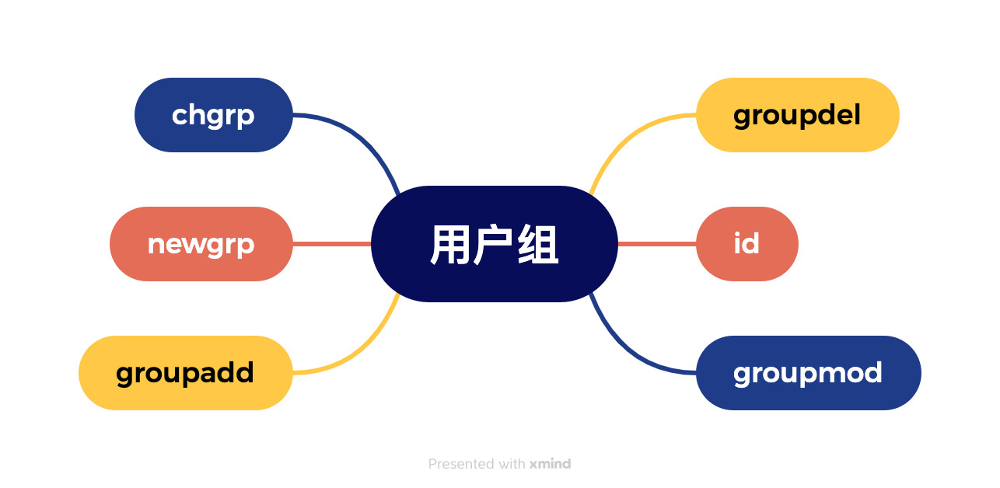

Linux漫谈系列--用户管理
0、用户分类

用户可以分三类：
- 超级用户: 拥有一切权限。
- 系统用户或者叫伪用户：这类用户只有用户名，没有密码，不能登录系统，一般是各类服务使用。
- 普通用户：需要配置密码后，可以登录系统，但是权限受限制。


识别用户的唯一依据是用户 ID，称为 UID。每个用户的 UID 都是唯一的，是用户身份的唯一标识，而不是用户名字。
那么系统里面的用户究竟有多少个，每个用户的信息都有啥？
和用户相关的信息都保存在/etc/passwd 文件中。
1、用户相关信息有哪些？
认识一下 Linux 系统中一个重要的文件/etc/passwd.
以root 用户为例：

上图中不同的颜色表示不同的用户分类。
结合一下 shell 编程的知识，可以编写一个 shell 程序，按照三种不同用户分类，统计一下每个类别的用户有几个，怎么写呢？

上述程序运行结果如下：
.png)
2、密码是如何加密及存储的呢？
（1）密码放在哪儿了？
另外一个重要的文件/etc/shadow，放的是所有用户的密码。
以zhangsan 用户为例说明密码存在哪里？

咱们使用deepseek 来解读一下：
以下是 /etc/shadow 文件格式的详细说明，基于Linux系统中用户账户安全管理的核心设计。
1. 文件结构与字段说明
每行对应一个用户账户，由9个冒号分隔的字段组成，格式如下：
username:password:last_change:min_days:max_days:warn_days:inactive_days:expire_date:reserved
| 字段序号 | 字段名称 | 描述 |
|---|---|---|
| 1 | username | 用户名，与/etc/passwd中的用户名一致。 |
| 2 | password | 加密后的密码：使用哈希算法（如SHA-256、SHA-512）加密的字符串；!或*表示账户被锁定；空字段表示无密码。 |
| 3 | last_change | 密码最后修改时间，以距离1970-01-01的天数表示。 |
| 4 | min_days | 密码修改最小间隔天数（0表示可随时修改）37。 |
| 5 | max_days | 密码有效期（如99999表示永不过期）。 |
| 6 | warn_days | 密码过期前警告天数（提醒用户修改密码）。 |
| 7 | inactive_days | 密码过期后账户宽限天数（超时则锁定账户）。 |
| 8 | expire_date | 账户绝对过期时间（距离1970-01-01的天数，超时后账户失效）。 |
| 9 | reserved | 保留字段，未使用。 |
2. 时间字段的计算规则
- last_change、expire_date 等时间字段均以Unix纪元（1970-01-01）为起点的天数表示。
- 例如：
last_change=19300表示密码最后一次修改时间为1970年后的第19300天（约2023年）。
Unix 纪元（1970年1月1日世界协调时UTC零点）
例如：
举例：密码过期时间的计算(1970年1月1日以来的天数)
/root/linux_sh/ch7/user_ex4.sh
.png)
那么如何计算unix 纪元开始的秒和日期的计算呢？
接着上图，计算如下：
.png)
看懂了么？
3. 有趣的chage 命令
- 第一种方式：锁定账户：在密码字段前添加
!或*（如!$6$...）。 - 第二种方式：强制密码过期：设置
max_days为有限天数，并配合warn_days提醒用户。
可以使用chage命令设置用户密码的过期时间。一种特殊情况是设置立刻过期。用户必须立刻修改密码。
chage -d 0 username
这种情况适合管理员管理用户的密码。
比如，管理一个班级的学生，每一个同学的初始密码都是123456，然后通过这样的设置后，每个同学第一次登录后，必须修改自己的密码，这样便于管理，并且增强了用户安全和隐私。
.png)
/etc/shadow文件实现了用户密码的安全存储与生命周期管理，是Linux系统账户安全的核心机制。
（2）Linux 用户口令加密详解
玩一玩Linux 如何加密的！
0、有趣的密码

猜一猜：这里的密码都是哪些诗句？
答案：参见最后一节
1、详解密码字段
比如zhangsan 用户的密码在注册时候，明文是123456，Linux 在存储到/etc/shadow 文件的时候，是明文存储的？还是加密存储的？我们怎么知道采用了什么加密算法呢？
以前的Linux 采用的是这种方式：加盐哈希（分为三个字段）
现在新版本的 Linux 采用的是这种方式：（分为四个字段，进行多轮次哈希）

解释三个疑惑：
第一个：如何知道是哪种加密算法？如下图所示：

第二个：啥是加盐哈希？

第三个：为啥新版本 Linux 要多轮次哈希？
在密码学中，轮次（rounds） 是指哈希算法重复执行的次数。这是现代密码存储中的重要安全机制。

实战一下：
实战之前，讲点基础知识：
2、OpenSSL 介绍
OpenSSL 是一套开源的、跨平台的密码学库和工具集，广泛应用于各种网络服务和应用程序中，以实现安全的网络通信。以下是关于 OpenSSL 的详细解析：
核心功能如下：
- 加密算法支持 OpenSSL 提供了丰富的对称、非对称加密算法实现，包括但不限于： 对称加密：AES（不同模式）、Blowfish、CAST、DES、IDEA、RC2、RC4、Triple DES等。 非对称加密：RSA、DSA、ECDSA、Ed25519、Ed448等。 哈希函数：MD5、SHA-1、SHA-2（SHA-224、SHA-256、SHA-384、SHA-512）、SHA-3、RIPEMD等。 消息认证码（MACs）：HMAC、CMAC等。
- SSL/TLS 支持 协议实现：OpenSSL 实现了 SSLv3、TLS 1.0、TLS 1.1、TLS 1.2、TLS 1.3 等多个版本的协议，用于在互联网上建立安全的、加密的数据传输通道。 证书管理：支持证书的生成、签署、验证、吊销、转换格式等操作。 密钥交换：支持多种密钥交换算法，如 RSA、Diffie-Hellman、ECDH、FFDHE、PSK等。 密码套件：组合使用上述加密、认证和密钥交换算法，形成可供 SSL/TLS 协商的密码套件列表。
- 工具集 OpenSSL 提供了一系列命令行工具，用于执行各种密码学相关任务，如： openssl：多功能工具，能够生成密钥、证书请求、自签名证书，进行加密解密、哈希计算、数字签名验证、证书链验证、协议握手模拟等。
3、实战简单加密
Linux 对于明文 123456 的加密分为三种情况：
- 第一种是直接加密linux_sh/ch7/jiami01.sh
.png)
运行结果为：
.png)
可以看出hash加密算法的特点是:明文一样，密文就一样，这样黑客就可以采用暴力破解的方法来进行攻击。
这也是不加盐哈希加密算法的最大的弱点。
4、破解一下
常用的暴力破解的方法有：字典攻击，查表法。
好玩的破解：自己动手试一试，打开下面的网站，把生成的密文输入进行，破解出对应的明文。
https://www.dcode.fr/sha512-hash?#f0 sha512破解 知道了密文反过来查询明文的网站。
5、实战加盐哈希
- 第二种是采用加盐哈希的方式加密/root/linux_sh/ch7/jiami02.sh
.png)
运行结果如下：
.png)
6、实战多轮次加盐
- 第三种是采用多轮次加盐哈希的方式加密
.png)
程序运行结果为：
.png)
这里指定了盐，指定了加密的轮次。这也是最新版的Linux默认的加密方式。
3、多用户如何管理
（1）用户组的概念
使用分组的方式进行管理。也就是系统里面有很多组，你可以选择加入哪个组？加入不同的组意味着权限不同。
当我们在系统里面新建一个用户的时候，默认加入哪个组呢？
规则是这样的：当新建一个用户zhangsan 的时候，默认加入的是随着新建的zhangsan用户，会自动新建一个名字叫做zhangsan 的用户组，默认该用户加入的是和自己名字一样的用户组。

识别用户组的唯一标识是 GID。
那么如何查看系统里面有多少个组，以及组的 GID 都是啥呢？
所有有关组的详细的信息都保存在/etc/group 文件中。
（2）用户组的信息在哪里？
/etc/group

（3）有个疑问？当一个用户属于多个用户组时？究竟有什么用？
当一个用户属于多个用户组时，同时拥有了多个用户组的权限。
初始组和有效组的概念。

初始组：新建用户的时候，添加的同名的组。
可以使用： usermod -aG 新组 用户名，把用户添加进行新的组。这样一个用户就属于多个组。但这是只有一个组称为有效组，其影响是当该用户新建文件的时候，该文件的所属组是哪一个。
可以使用命令： newgrp 命令来改变用户的有效组。

（4）用户组也可以设置密码
/etc/gshadow 文件格式：

用户组密码实际中较少使用。
4、小结一下

5、深入探究一下背后的秘密
影响用户及用户组默认行为的三个文件。
- /etc/default/useradd
- /etc/login.defs
- /etc/skel/*
（1）第一个/etc/default/useradd
.png)
（2）第二个 /etc/login.defs
该文件规定了用户和用户组的各种默认设置。
/etc/login.defs 是一个在类 Unix 系统（如 Linux、Unix 或 BSD）中用于定义系统范围内的 用户账户和密码管理策略的配置文件。
它包含了创建新用户时的默认设置， 以及一些全局性的账户和密码相关限制。
以下是对 /etc/login.defs 文件中常见配置选项的详细说明：
- 用户ID和用户组ID UID_MIN: 最小用户 ID（User ID），新创建的非特权用户账户的 UID 应该在这个值以上。
- UID_MAX: 最大用户 ID，非特权用户账户的 UID 应该在这个值以下。
- GID_MIN: 最小组 ID（Group ID），新建的非特权组的 GID 应该在这个值以上。
- GID_MAX: 最大组 ID，非特权组的 GID 应该在这个值以下。
- 密码策略 PASS_MAX_DAYS: 密码有效期的最大天数。超过这个天数后，系统会要求用户更改密码。
- PASS_MIN_DAYS: 密码更改后，必须等待的最小天数才能再次更改密码。
- PASS_MIN_LEN: 密码的最小长度。设置此值可以强制用户选择足够复杂的密码。
- PASS_WARN_AGE: 在密码到期前多少天开始提醒用户更改密码。
- 账户管理 CREATE_HOME: 是否在创建新用户时自动为其建立家目录。值为 yes 或 no。
- USERGROUPS_ENAB: 是否启用用户私有初始组（用户名与组名相同）。值为 yes 或 no。 如果启用，新用户创建时会自动创建与其同名的组，并将其设为主组。
- 账户过期和锁定 ENCRYPT_METHOD: 指定系统使用的密码加密算法，如 DES、MD5、SHA-256、SHA-512 或 bcrypt。
- INACTIVE: 用户密码过期后，账户在多少天内仍可登录但必须更改密码，超期后账户将被锁定。
- MAX_MEMBERS_PER_GROUP: 一个组中允许的最大成员数量。
- 其他设置 UMASK: 新建用户时默认的 umask 值，影响用户创建文件和目录时的默认权限。
比如Linux用户密码加密为什么采用sha512算法，就在这个文件中指定。
.png)
（3）第三个/etc/skel/*
主要是三个文件。
.png)
当在系统中新建一个用户的时候，系统会自动把/etc/skel/目录在的文件复制到/home/新用户名/目录下。以便每个用户都可以自定义自己的环境。
6、需要掌握的命令
（1）和用户管理有关的 4 个

（2）和用户组管理有关的6个

7、用户提权方法
提权三种方法：
（1）su
（2）sudo
（3）加入wheel组
第一种：直接使用su 命令
.png)
缺点是切换为root 用户时，必须要知道 root 用户的密码才可以。不安全，也不现实。
第二种：修改/etc/sudoers 文件
.png)

一但一个用户拥有的sudo 权限，就可以执行超出其权限范围以外的事情了。并且此时他不需要知道 root 用户的密码。但是要注意一定要合理的赋予用户权限。
第三种：让用户加入 wheel 组。
该用户加入 wheel 组以后，就拥有了 wheel 组的权限。
历史背景
wheel组名称起源于BSD系统，原意为"big wheel"（大人物），现成为类Unix系统中管理权限分配的标准化机制。现代Linux系统通过PAM模块和sudoers文件实现该功能。
在一些Linux发行版中，如Red Hat、CentOS和Fedora，wheel组的成员默认可以获得管理员权限。
.png)
明白三种提权方式的区别了么？
8、对于爱捣乱的用户，如何禁止登录
.png)
学废了么？
9、来个综合实战
例题1：批量创建用户
user1.txt sh07.sh程序会依据user1.txt里面提供的用户名和密码批量创建用户。
user1.txt 是一个普通文本文件。保存了你想要批量创建的用户名和密码。（用户名和密码之间有空格）
test_user1 123456 test_user2 123456
sh07 程序的内容如下：
.png)
程序运行结果如下：
.png)
例题 2：批量删除用户
user1.txt sh08.sh 依据user1.txt里面提供的用户名批量清除上面创建的用户。
sh08.sh程序的源码如下：
.png)
运行结果如下：
.png)
上述程序就是一个用户管理的典型的应用。
10、总结

谜语答案
答案：
（1）清明时节雨纷纷，路上行人欲断魂
（2）会当凌绝顶，一览众山小
（3）竹外桃花三两只，春江水暖鸭先知
（4）窗前明月光，疑是地上霜
随堂测试